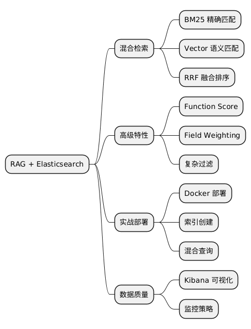

RAG 进阶指南：别只盯着向量数据库，Elasticsearch 才是扫地僧
Posted on 四 15 1月 2026 in AI
RAG 进阶指南：别只盯着向量数据库，Elasticsearch 才是扫地僧
“垃圾进，垃圾出。” —— 这句计算机界的至理名言，在 RAG（检索增强生成）时代依然振聋发聩。
开篇：大多数 RAG 死在了检索上
最近有很多朋友问我：“老范，为什么我的 RAG 系统用了最先进的向量数据库，用了 GPT, Gemini, DeepSeek 等大模型，回答问题还是像喝了假酒一样, 迷迷糊糊常说错话？”
其实，90% 的 RAG 问题都出在“检索（Retrieval）”这一步。
我们太迷信“向量（Vector）”了。我们以为只要把文档变成 Embedding 扔进向量数据库，LLM 就能神奇地找到答案。
大错特错。
向量检索擅长“模糊意会”，但它是个“脸盲”。如果你搜“错误码 502”，向量可能会给你返回“服务器错误的定义”，而不是你文档里写的“502 报错排查手册”。
这时候，你需要一位“扫地僧”——Elasticsearch。
今天这篇文章，基于 Medium 上 Hiconcep 的高赞文章，我们来聊聊如何用 Elasticsearch 的“十八般武艺”拯救你的 RAG。
一、为什么纯向量检索不够用？
做 RAG 的第一天，教程都会教你：Text -> Embedding -> Vector DB -> Cosine Similarity。
这就好比你找对象只看“感觉”（语义相似度）。 - 优点：能懂你的言外之意。你说“我想吃点带壳的”，它能给你推荐“大闸蟹”和“皮皮虾”。 - 缺点：不精准。你说“我要吃阳澄湖大闸蟹”，它可能给你推荐“澳洲龙虾”，因为它们在向量空间里离得很近——都是高档海鲜。
但在企业级应用里，用户搜“订单号 20260115”，你给我推荐“如何创建订单”，用户会想打人的。
这时候，我们需要BM25（关键词检索）。它就像一个死板但精准的图书管理员，通过词频（TF-IDF）精确匹配关键词。
结论：小孩子才做选择，成年人全都要。 也就是 混合检索（Hybrid Search）。
二、Elasticsearch 的组合拳：混合检索
Elasticsearch 最强大的地方在于，它不仅是最好的搜索引擎，现在也是一流的向量数据库。它可以让你在一个查询里同时使用 BM25 和 Vector Search。
1. BM25 + Vector：左脑与右脑的配合
- BM25（左脑）：负责精确匹配。用户搜专有名词、错误码、特定ID时，它绝不含糊。
- Vector（右脑）：负责语义理解。用户描述模糊、用词不准时，它能猜出意图。
怎么做？
在 Elasticsearch 中，你可以用 rrf (Reciprocal Rank Fusion) 来融合两者的排名。
// 伪代码示例：混合检索
{
"sub_searches": [
{
"query": { "match": { "content": "RAG 优化" } } // BM25
},
{
"knn": { "field": "content_vector", "query_vector": [...] } // Vector
}
],
"rank": { "rrf": {} } // 倒数排名融合
}
这就像是请了两位专家会诊，最后给出一个综合评分。
三、除了检索，还要有“偏见”
很多 RAG 系统检索出来的内容是“正确但无用”的。比如你问“最新财报”，它给你找出了 2020 年的财报。从语义上讲，它确实是“财报”，但从时效性上讲，它就是废纸。
Elasticsearch 提供了两个大杀器：Function Score（函数得分） 和 Field Weighting（字段加权）。
1. Function Score：给“新”内容加分
你可以告诉 ES：“如果这篇文章是最近发布的，给它的分数乘个系数。”
这就解决了“时效性”问题。
2. Field Weighting：标题党有理
通常，出现在“标题”里的关键词，比出现在“正文”角落里的关键词更重要。
你可以设置：Title 字段权重 2.0，Content 字段权重 1.0。这样，标题匹配的文档会排在更前面。
3. 复杂过滤：上下文感知
RAG 不应该是个“傻白甜”。 - 用户是“财务部”的，就别给他看“研发部”的文档。 - 用户问的是“2025年”的数据，就直接把其他年份过滤掉。
ES 的 bool 查询（must, should, filter）是处理这些结构化过滤的神器。向量数据库在这方面通常比较弱。
四、数据质量的可视化：Kibana
这一点常常被忽视。你往向量数据库里塞了什么，你真的知道吗？
如果你的 chunk 切分切坏了，或者 embedding 生成错了，黑盒的向量数据库很难发现。
Elasticsearch 配套的 Kibana 是个好东西。你可以直接在里面看到： - 分词后的 token 是什么样？ - 向量字段是不是空的？ - 某个关键词的文档频率是多少？
监控你的数据质量，是 RAG 成功的隐形护城河。
五、实战：手把手教你搭建一个"不智障"的 RAG
光说不练假把式。我们来点硬菜——从零开始，用 Docker 跑起 ES，并用 Python 搭建一个支持混合检索的 RAG Demo。
Step 1: 启动“扫地僧” (Docker 部署 ES + Kibana)
先把环境搭起来。别担心，不需要你手动下载压缩包，Docker 一键搞定。
创建一个 docker-compose.yml：
services:
elasticsearch:
image: docker.elastic.co/elasticsearch/elasticsearch:8.11.0
container_name: es_node
environment:
- discovery.type=single-node
- xpack.security.enabled=true
- xpack.security.http.ssl.enabled=false
- xpack.security.transport.ssl.enabled=false
- ELASTIC_PASSWORD=${ELASTIC_PASSWORD}
- "ES_JAVA_OPTS=-Xms512m -Xmx512m"
ports:
- "9200:9200"
volumes:
- es_data:/usr/share/elasticsearch/data
networks:
- es-net
healthcheck:
test: ["CMD-SHELL", "curl -s -u elastic:${ELASTIC_PASSWORD} http://localhost:9200/_cluster/health | grep -q 'status'"]
interval: 10s
timeout: 10s
retries: 120
# Setup container to create kibana_system user password
es_setup:
image: docker.elastic.co/elasticsearch/elasticsearch:8.11.0
container_name: es_setup
depends_on:
elasticsearch:
condition: service_healthy
environment:
- ELASTIC_PASSWORD=${ELASTIC_PASSWORD}
- KIBANA_PASSWORD=${KIBANA_PASSWORD}
networks:
- es-net
command: >
bash -c '
echo "Setting kibana_system password...";
until curl -s -u elastic:${ELASTIC_PASSWORD} http://elasticsearch:9200 | grep -q "cluster_name"; do
sleep 5;
done;
curl -s -X POST -u elastic:${ELASTIC_PASSWORD} -H "Content-Type: application/json" \
http://elasticsearch:9200/_security/user/kibana_system/_password \
-d "{\"password\":\"${KIBANA_PASSWORD}\"}" | grep -q "^{}";
echo "Done!";
'
kibana:
image: docker.elastic.co/kibana/kibana:8.11.0
container_name: kibana
ports:
- "5601:5601"
environment:
- ELASTICSEARCH_HOSTS=http://elasticsearch:9200
- ELASTICSEARCH_USERNAME=kibana_system
- ELASTICSEARCH_PASSWORD=${KIBANA_PASSWORD}
networks:
- es-net
depends_on:
es_setup:
condition: service_completed_successfully
volumes:
es_data:
driver: local
networks:
es-net:
driver: bridge
跑起来：
docker-compose up -d
cp env.example .env
ELASTIC_PASSWORD=changeme
KIBANA_PASSWORD=kibana_changeme
打开浏览器访问 http://localhost:5601，看到 Kibana 的界面就算成功了。这一步通常只需要喝半杯咖啡的时间。
Step 2: 准备数据与环境
你需要安装这几个 Python 库：
pip install elasticsearch langchain langchain-openai sentence-transformers
Step 3: 创建索引 (Mapping)
这一步很关键。我们要告诉 ES：“请准备好，我要存向量了！”
from elasticsearch import Elasticsearch
# 连接本地 ES
es = Elasticsearch("http://localhost:9200")
# 定义索引结构
index_mapping = {
"mappings": {
"properties": {
"title": {"type": "text"}, # 标题，用于 BM25 检索
"content": {"type": "text"}, # 正文，用于 BM25 检索
"embedding": { # 向量字段
"type": "dense_vector",
"dims": 384, # 对应 sentence-transformers/all-MiniLM-L6-v2 的维度
"index": True,
"similarity": "cosine" # 使用余弦相似度
},
"category": {"type": "keyword"} # 分类，用于精确过滤
}
}
}
# 创建索引（如果存在就先删了重建）
if es.indices.exists(index="rag_docs"):
es.indices.delete(index="rag_docs")
es.indices.create(index="rag_docs", body=index_mapping)
print("索引创建完毕！")
Step 4: 写入数据 (Indexing)
我们假装有几条关于“服务器运维”的文档。注意，这里我们会同时存入“文本”和“向量”。
from sentence_transformers import SentenceTransformer
# 加载一个轻量级的开源 embedding 模型
model = SentenceTransformer('all-MiniLM-L6-v2')
documents = [
{"title": "服务器报错 502 排查", "content": "502 Bad Gateway 通常意味着网关错误，请检查 Nginx 配置。", "category": "ops"},
{"title": "数据库连接超时", "content": "检查防火墙设置，确保 3306 端口开放，并验证账号密码。", "category": "db"},
{"title": "员工请假流程", "content": "登录 OA 系统，点击人事服务，选择请假申请。", "category": "hr"},
]
for doc in documents:
# 1. 生成向量
embedding = model.encode(doc["content"]).tolist()
# 2. 存入 ES
doc_body = {
"title": doc["title"],
"content": doc["content"],
"embedding": embedding,
"category": doc["category"]
}
es.index(index="rag_docs", document=doc_body)
print("数据灌入完毕！")
Step 5: 见证奇迹时刻 (Hybrid Search)
现在，重头戏来了。我们要用 混合检索 来找答案。用户问：“502 怎么修？”
query_text = "502 怎么修"
query_vector = model.encode(query_text).tolist()
# 构造混合查询
search_body = {
"size": 3,
"query": {
"bool": {
"should": [
# 1. BM25 关键词检索 (权重 1.0)
{
"multi_match": {
"query": query_text,
"fields": ["title^2", "content"], # 标题权重是正文的2倍
"boost": 1.0
}
},
# 2. KNN 向量检索 (权重 2.0，语义匹配更重要)
{
"knn": {
"field": "embedding",
"query_vector": query_vector,
"k": 10,
"num_candidates": 100,
"boost": 2.0
}
}
]
}
}
}
response = es.search(index="rag_docs", body=search_body)
print(f"用户提问: {query_text}")
print("-" * 30)
for hit in response['hits']['hits']:
score = hit['_score']
title = hit['_source']['title']
content = hit['_source']['content']
print(f"[得分: {score:.4f}] {title} \n -> 内容: {content}")
运行结果预期： 你会发现，“服务器报错 502 排查”这条文档不仅因为包含了“502”被 BM25 选中，还因为语义相关被向量检索选中，得分最高，稳稳排在第一。
这就避免了如果你只用向量检索，可能搜出“404 错误”等不相关但语义接近的文档；也避免了如果你只用 BM25，可能搜不到没有精确匹配关键词的相关文档。
六、实战 Checklist
读完这篇文章，如果你想优化你的 RAG，可以照着这个清单做：
- 引入混合检索：不要只用 Vector，加上 Keyword Search (BM25)。
- 配置 RRF：使用倒数排名融合，让两种检索方式互补。
- 设置字段权重：Title > Abstract > Content，让重要的字段说话。
- 加入时间衰减：用 Function Score 降低旧文档的权重。
- 结构化过滤：利用 ES 的 Filtering 能力，先过滤（权限、时间、分类），再检索。
- 可视化监控：用 Kibana 定期抽查索引里的数据质量。
总结
RAG 的本质是 Retrieve（检索） + Generate（生成）。
现在 LLM 的生成能力已经很强了，瓶颈往往在检索。
不要为了赶时髦去用那些纯向量数据库，Elasticsearch 这个“老家伙”，凭借着它在倒排索引多年的积累，加上新进化的向量能力，才是构建企业级 RAG 的最稳健选择。
它既有“眼力劲儿”（语义理解），又有“记性”（关键词匹配），还能“看人下菜碟”（排序加权）。
当然，如果你的场景还没复杂到需要 ES，pgvector 也是一个扎实的起点。关键不是选哪个工具，而是先把检索质量做好。
pgvector vs. Elasticsearch：怎么选？
有朋友问："我就一个小项目，几万条文档，有必要上 Elasticsearch 吗？"
说实话，如果你的场景满足以下条件，pgvector + PostgreSQL 可能是更简单的起点：
- 数据量在百万级以下
- 检索以语义搜索为主，不需要复杂的关键词精确匹配
- 你已经有 PostgreSQL 在跑
- 团队没有 ES 运维经验
pgvector 让 PostgreSQL 支持向量存储和相似度搜索，一条 CREATE EXTENSION vector 就开工了。SQL 就是查询语言，没有额外学习成本。
但如果你需要以下能力，Elasticsearch 仍然是更好的选择：
- 混合检索：BM25 + Vector + RRF 融合——本文的核心武器
- 字段加权和时间衰减：Function Score 开箱即用
- 结构化过滤：按部门、角色、时间范围精确过滤
- 数据质量监控：Kibana 的可视化能力
| pgvector | Elasticsearch | |
|---|---|---|
| 适合 | 语义检索为主，数据量小，运维简单 | 混合检索，精确匹配 + 语义，企业级场景 |
| 门槛 | 会 SQL 就行 | ES DSL 有学习成本 |
| 运维 | 复用 PG，几乎零成本 | JVM 调优，集群管理 |
| 杀手锏 | ACID + JOIN，和业务数据同库 | BM25 + Vector 混合，Function Score |
建议路径：先用 pgvector 跑通 RAG 原型，验证检索质量。如果发现纯语义检索不够（用户搜错误码搜不到、时效性差），再引入 Elasticsearch 的混合检索。
想从 pgvector 开始？看这篇：用 pgvector 做 RAG：别急着上 Pinecone，你的 PostgreSQL 就够了
扩展阅读
- 用 pgvector 做 RAG：别急着上 Pinecone，你的 PostgreSQL 就够了 — 更轻量的 RAG 方案，适合起步
- Enhancing RAG with Elasticsearch: A Deep Dive into Advanced Search Capabilities
- Elasticsearch Guide: Hybrid Search
- RAG with Elasticsearch and LangChain
@startmindmap
* RAG + Elasticsearch
** 混合检索
*** BM25 精确匹配
*** Vector 语义匹配
*** RRF 融合排序
** 高级特性
*** Function Score
*** Field Weighting
*** 复杂过滤
** 实战部署
*** Docker 部署
*** 索引创建
*** 混合查询
** 数据质量
*** Kibana 可视化
*** 监控策略
@endmindmap

本作品采用知识共享署名-非商业性使用-禁止演绎 4.0 国际许可协议进行许可。